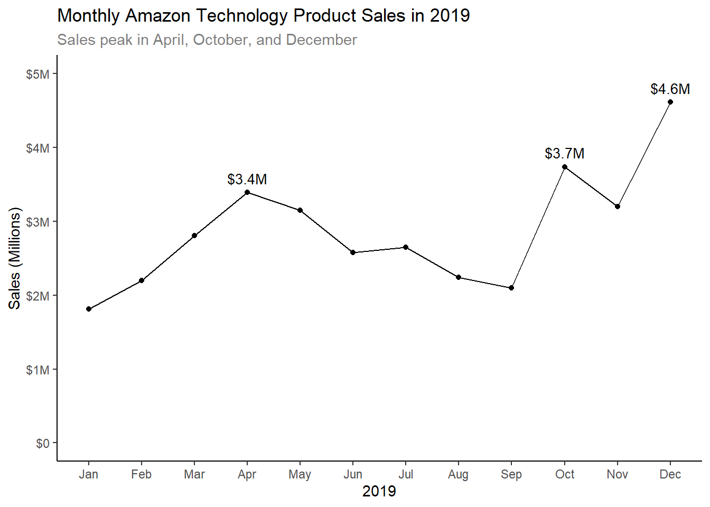
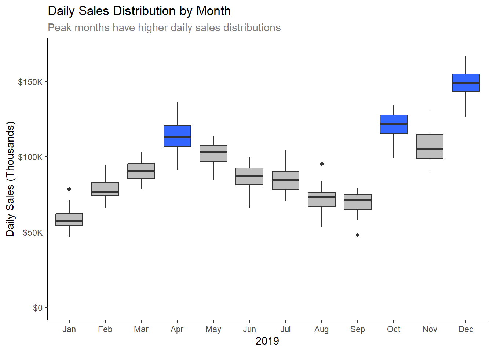
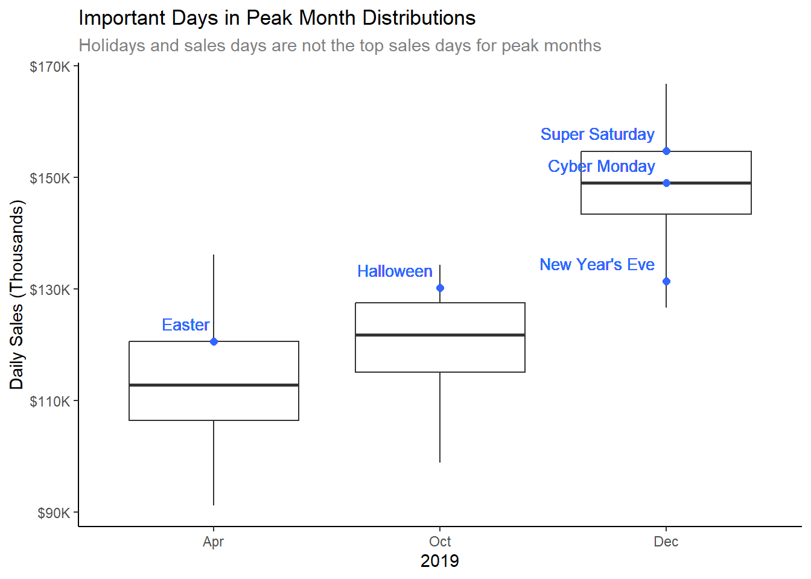
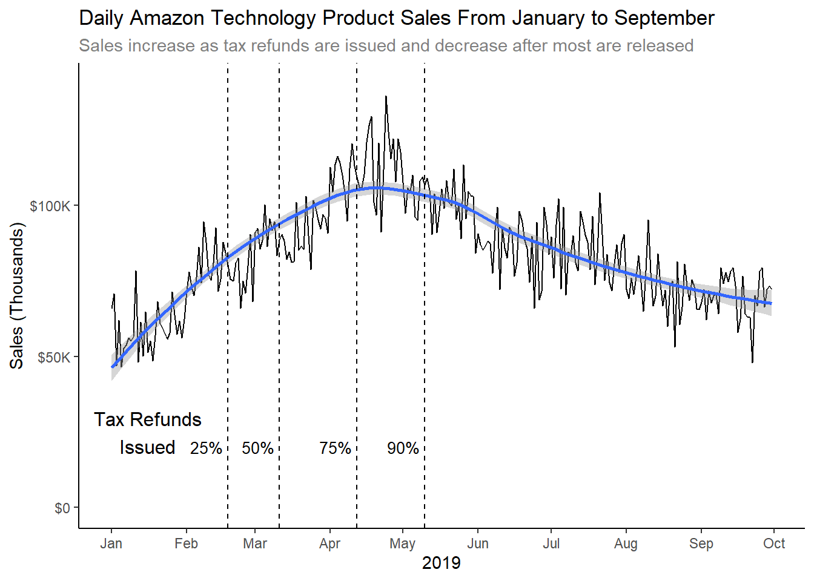
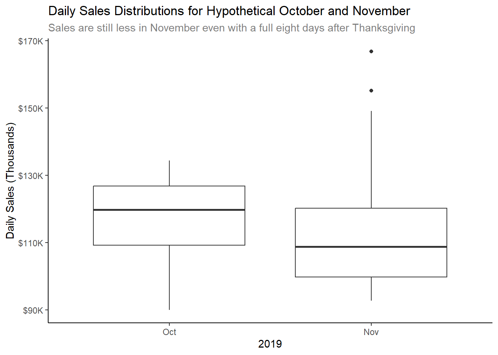

Peak Technology Product Sales Provide Marketing Insights and Puzzles
Introduction
The purpose of this report is to provide Amazon technology product managers with insights about peak sales to improve marketing strategies. Analysis completed provides helpful information on how to direct marketing around peak sales and also raises questions on the likely underlying factors for higher sales. Information is derived from a sample of technology product data from 2019, including 19 products across 10 urban ZIP codes. Recommend that findings are validated against a larger sample before utilizing for marketing purposes.
Analysis
Technology product sales for Amazon vary by month with peaks in April, October, and December.
Rather than high outlier sales days that drive up the total monthly sales, peak sales months have higher daily sales distributions.

Focusing in on important days (holidays or big sales days) for peak months, they are actually not the highest sales day and most are not in the top 25% of sales days for the month (exception being Halloween for October).

So what could be driving these higher monthly sales? For December, it is likely the end of year holidays, such as Christmas, Hanukkah, and Kwanzaa. And the April peak could be associated with tax refunds.

The October peak may be because (1) some event increased sales in October, (2) some event decreased November sales (3) or a combination of the two. From the earlier visual, there are no high outlier sales days in October.
Thanksgiving was later in 2019, on the 28th, so several potentially high sales days after Thanksgiving, such as Cyber Monday, were in December instead of November. The earliest Thanksgiving can ever be is on November 22nd, giving the month eight days after the holiday. As a hypothetical, investigated if November sales would be higher than October if in 2019 dates were shifted so November included a full eight days after Thanksgiving. This method was used as a proxy and recommend reviewing historical data over several years.
| Month | Total Sales (Millions) |
|---|---|
| October | $3.7M |
| November | $3.4M |
Based on a hypothetical date shift, October would still have higher sales than November. Taking a closer look at the distributions, even though November has gained some higher sales days, higher than October, by including more days after Thanksgiving it is not enough to overcome the higher sales days in October overall.

Conclusion
It is important to understand peak sale periods for developing a marketing strategy to increase sales. There are three sales peaks for Amazon technology products and the likely driver for the October peak is unknown. As expected, December has the highest sales peak and is likely due to end of year holidays. Recommendation here is to continue to support marketing that focuses on the holidays and encourages gift purchases. It seems like the peak in April is related to tax refunds being released. Consider promoting products with prices that are within average tax refund amounts. It is still unclear if the peak in October is due to an October-specific, November-specific, lead up to end of year holidays, or 2019-specific event or series of events. As such, encourage following through on earlier recommendation that these findings about peak sales are validated against a larger sample that includes more years, products, and locations.